विकास की धारणा हमेशा से हमारे साथ रही है। हम क्या करना चाहते हैं और अपना जीवन कैसे जीना चाहते हैं, इसके बारे में हमारी कुछ आकांक्षाएं या इच्छाएं होती हैं।
1. अलग-अलग लोगों के विकास के लक्ष्य भिन्न हो सकते हैं। (क्योंकि लोगों की जीवन-परिस्थितियां भिन्न होती हैं)।
2. एक के लिए जो विकास है, वह दूसरे के लिए विकास न होकर विनाशकारी (Destructive) भी हो सकता है!
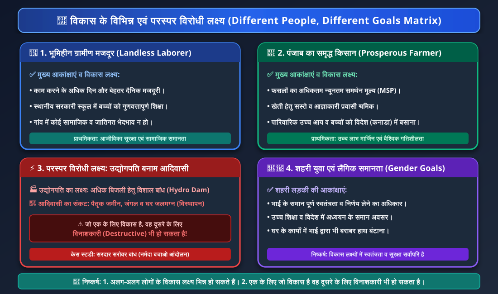
• भूमिहीन मजदूर: अधिक दिन काम व बेहतर मजदूरी।
• पंजाब का समृद्ध किसान: फसलों का उच्च समर्थन मूल्य व सस्ते मजदूर।
• उद्योगपति बनाम आदिवासी (परस्पर विरोधी लक्ष्य): उद्योगपति को बिजली हेतु विशाल बांध चाहिए, लेकिन आदिवासी का घर व पैतृक जमीन जलमग्न हो जाती है।
• शहरी लड़की: भाई जैसी पूर्ण स्वतंत्रता व विदेश में पढ़ाई के समान अवसर।
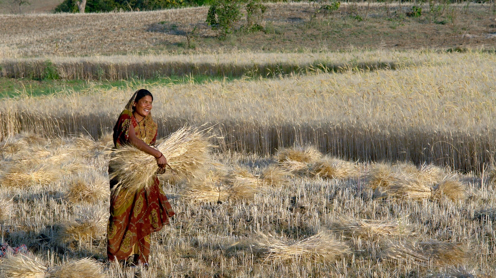
• भूमिहीन मजदूरों के लिए विकास का अर्थ नियमित दैनिक रोजगार, उचित मजदूरी और बच्चों के लिए सम्मानजनक शिक्षा है।

• समृद्ध किसानों के लिए विकास का अर्थ उपज का उच्च बाजार मूल्य, सस्ता श्रम और पारिवारिक संपन्नता है।
• शिक्षित शहरी युवाओं के लिए विकास का प्राथमिक पैमाना उनकी योग्यता के अनुकूल सम्मानजनक और स्थायी रोजगार है।
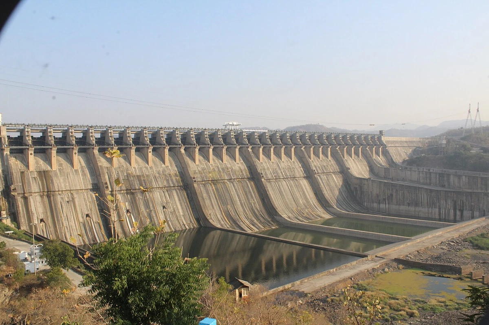
• एक उद्योगपति के लिए बांध से बिजली उत्पादन विकास है, लेकिन वहां के स्थानीय आदिवासियों के लिए यह पैतृक आवास का विनाश है।
लोग केवल अधिक आय ही नहीं चाहते, बल्कि वे स्वतंत्रता, सुरक्षा, आदर और बराबरी का व्यवहार भी पाना चाहते हैं। वे भेदभाव से अप्रसन्न होते हैं।
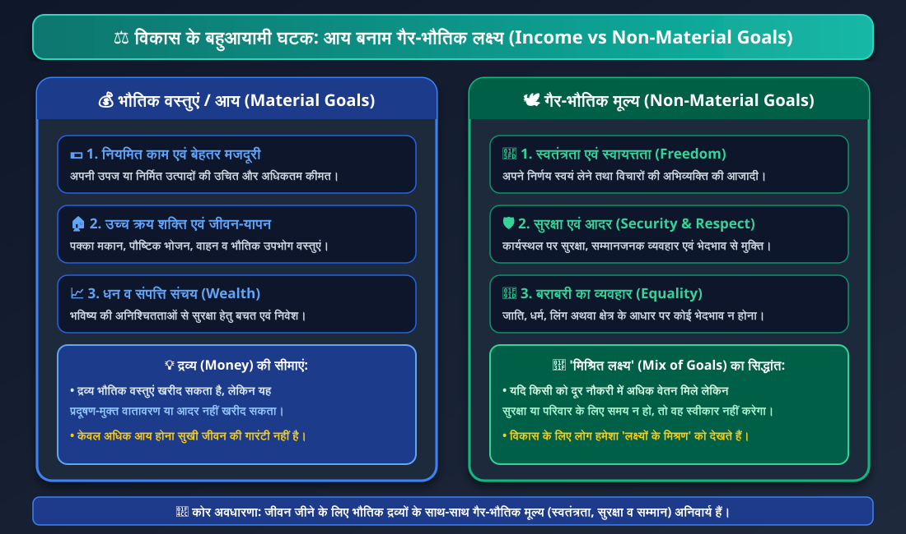
• भौतिक वस्तुएं: द्रव्य (Money) से खरीदी जाने वाली वस्तुएं—मकान, कार, भोजन, वस्त्र।
• गैर-भौतिक मूल्य: स्वतंत्रता, सुरक्षा, आत्म-सम्मान, समानता, प्रदूषण-मुक्त स्वच्छ वातावरण।
• निष्कर्ष: द्रव्य भौतिक चीजें खरीद सकता है, लेकिन आदर, सच्ची मित्रता या सुरक्षित वातावरण नहीं खरीद सकता!
• यदि आपको कहीं दूर नौकरी मिलती है, जिसमें वेतन बहुत अधिक है लेकिन कार्यस्थल पर सुरक्षा नहीं है, काम के घंटे अत्यधिक हैं और परिवार के लिए कोई समय नहीं मिलता, तो आप ऐसी नौकरी को अस्वीकार कर सकते हैं।
• इसके विपरीत, कम वेतन वाली लेकिन स्थायी, सुरक्षित, सम्मानजनक और परिवार हेतु अनुकूल नौकरी को लोग अधिक प्राथमिकता देते हैं।
• अतः विकास के लिए लोग 'मिश्रित लक्ष्यों' (Mix of Goals) को देखते हैं।
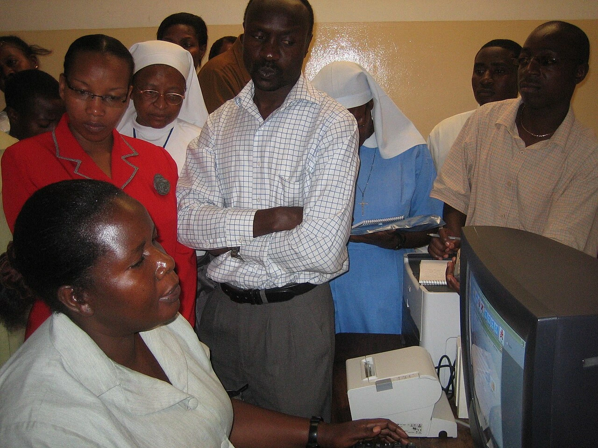
• महिलाओं के लिए विकास का अर्थ न केवल आय है, बल्कि घर-परिवार में आदर, निर्णय लेने की आजादी और सुरक्षित कार्य परिवेश है।
राष्ट्रीय विकास (National Development): देश के सभी नागरिकों के जीवन स्तर में समग्र सुधार, न्यायपूर्ण वितरण तथा देश की प्रगति के बारे में विभिन्न व्यक्तियों की भिन्न एवं परस्पर विरोधी धारणाएं हो सकती हैं।
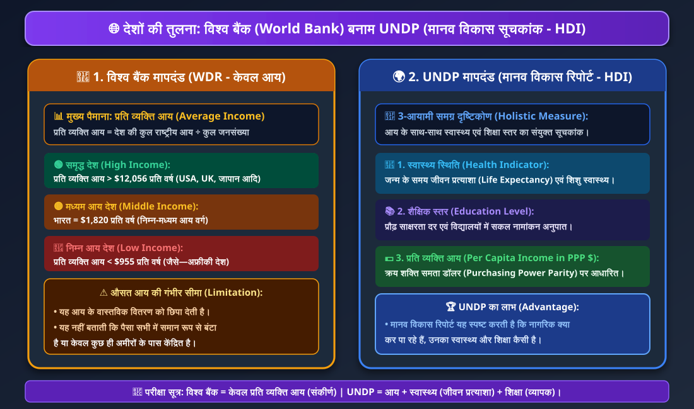
• विश्व बैंक (WDR): केवल प्रति व्यक्ति आय (Per Capita Income) पर आधारित वर्गीकरण।
• UNDP (HDR): 3-आयामी समग्र दृष्टिकोण—प्रति व्यक्ति आय + स्वास्थ्य (जीवन प्रत्याशा) + शैक्षिक स्तर (साक्षरता)।
• औसत आय यह तो बताती है कि कुल कितना कमाया गया, लेकिन यह आय के वास्तविक वितरण (Distribution of Income) को छिपा देती है।
• यह नहीं दर्शाती कि धन समाज के सभी वर्गों में समान रूप से बंटा है या केवल मुट्ठी भर अमीरों के पास केंद्रित है।
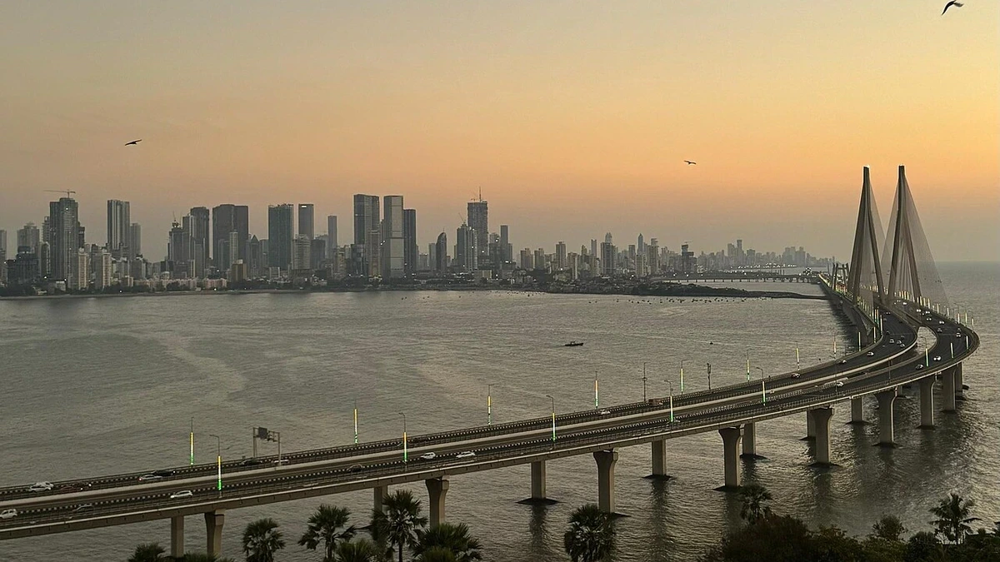
• गगनचुंबी वित्तीय इमारतों के साथ-साथ गरीबी का सह-अस्तित्व यह साबित करता है कि केवल औसत आय संपूर्ण विकास का सही पैमाना नहीं है।
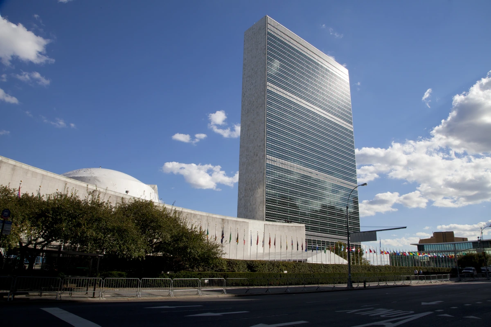
• UNDP का मानना है कि विकास का अंतिम लक्ष्य मानव की क्षमताओं, स्वास्थ्य और शिक्षा का उन्नयन है।
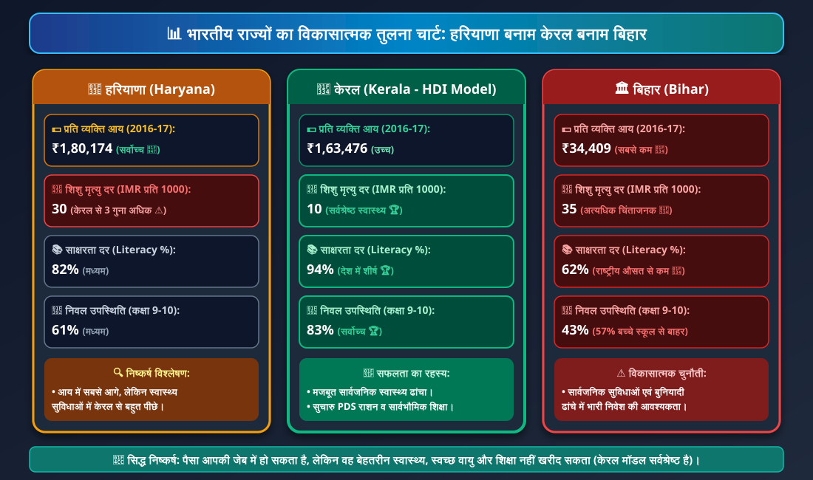
• प्रति व्यक्ति आय: हरियाणा (₹1,80,174 🥇) > केरल (₹1,63,476) > बिहार (₹34,409 🔴)।
• शिशु मृत्यु दर (IMR): केरल (10 🏆) < हरियाणा (30 ⚠️) < बिहार (35 🔴)।
• साक्षरता दर: केरल (94% 🏆) > हरियाणा (82%) > बिहार (62% 🔴)।
• निवल उपस्थिति: केरल (83% 🏆) > हरियाणा (61%) > बिहार (43% 🔴)।
यद्यपि हरियाणा की प्रति व्यक्ति आय केरल से अधिक है, फिर भी केरल मानव विकास में बहुत आगे है क्योंकि:
1. केरल में मौलिक स्वास्थ्य एवं शैक्षिक सुविधाएं व्यापक स्तर पर उपलब्ध हैं।
2. केरल में सार्वजनिक वितरण प्रणाली (PDS - राशन की दुकानें) अत्यंत सुचारु रूप से कार्य करती है, जिससे सभी नागरिकों को सस्ता व पौष्टिक खाद्यान्न मिलता है।
3. निष्कर्ष: पैसा आपकी जेब में हो सकता है, लेकिन वह बेहतरीन स्वास्थ्य, जीवन रक्षक दवाएं, संक्रामक रोगों से सुरक्षा और स्वच्छ वायु नहीं खरीद सकता!
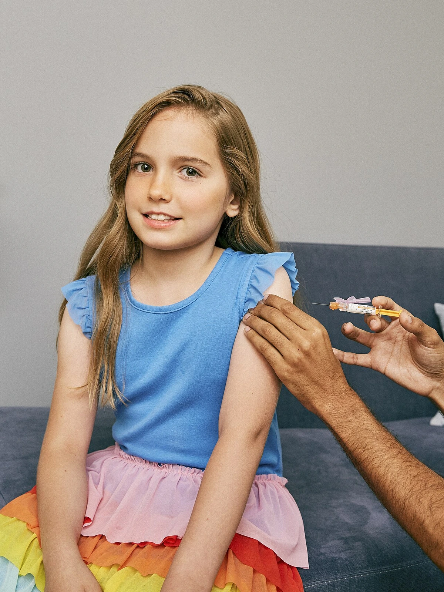
• केरल में प्राथमिक स्वास्थ्य केंद्रों (PHC) का सघन जाल हर नवजात शिशु की जीवन रक्षा सुनिश्चित करता है।
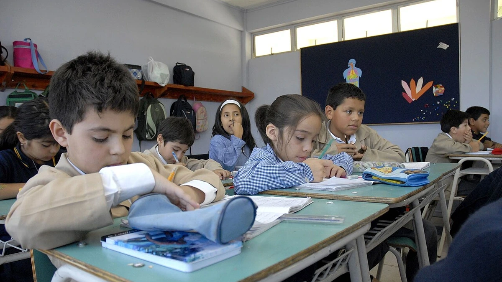
• शिक्षा में निरंतर सार्वजनिक निवेश ने केरल को देश का सर्वाधिक साक्षर व जागरूक राज्य बनाया है।
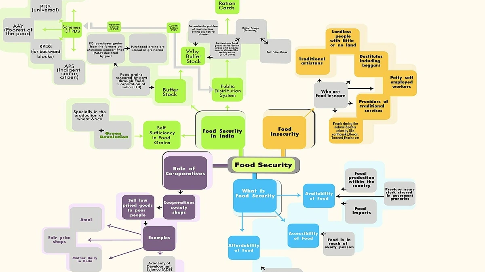
• गरीब परिवारों को रियायती दर पर गेहूं, चावल, चीनी व तेल उपलब्ध कराकर कुपोषण को दूर करने वाली PDS व्यवस्था।
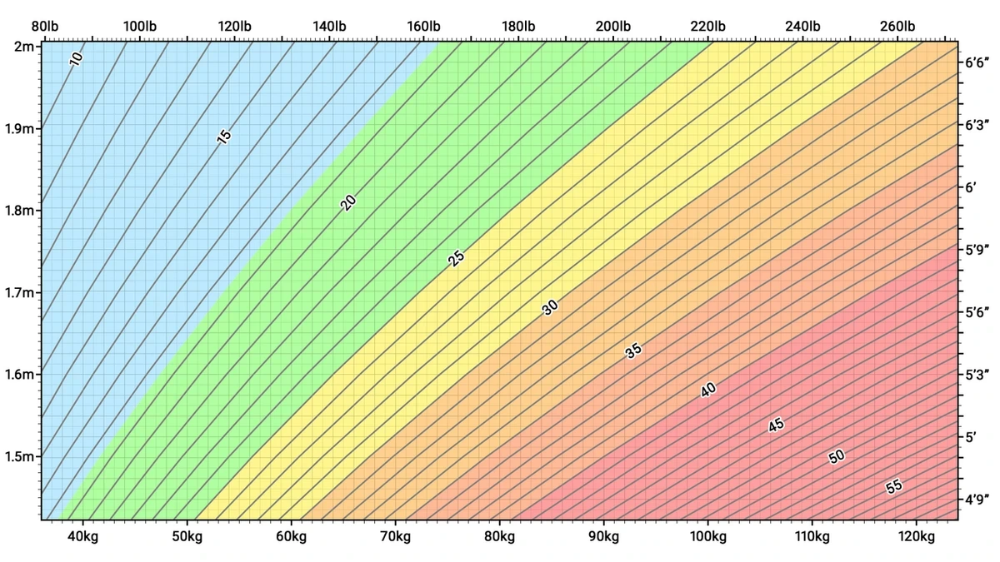
• मानक: यदि BMI < 18.5 है तो व्यक्ति अल्पपोषित (Under-nourished) है; यदि BMI > 25 है तो व्यक्ति अतिभार (Overweight) है।
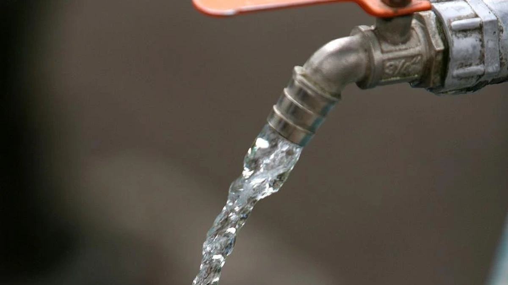
• स्वच्छ पेयजल की उपलब्धता जलजनित संक्रामक रोगों (हैजा, पीलिया, टायफाइड) से सुरक्षा प्रदान करती है।
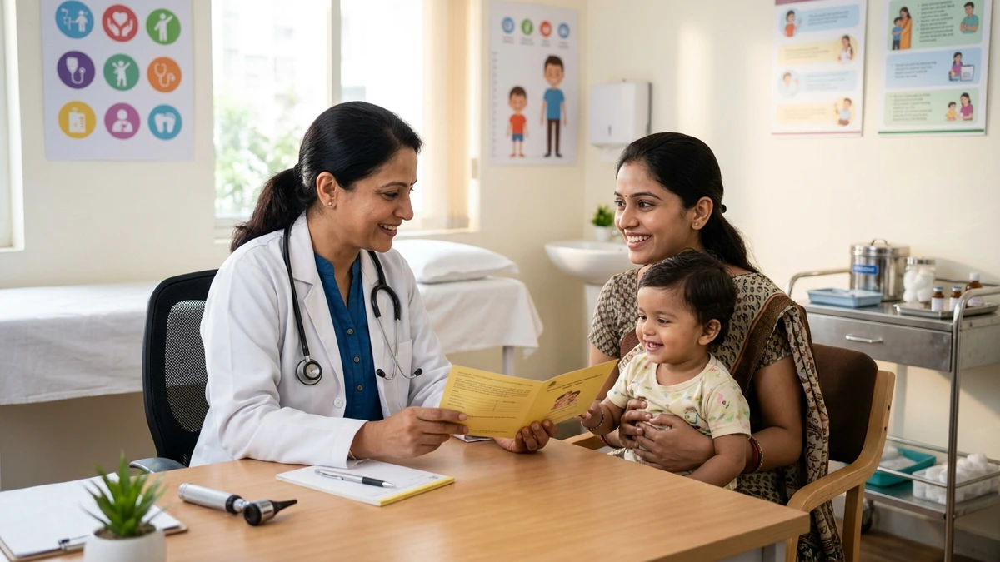
• अस्पतालों में सुरक्षित प्रसव से मातृ मृत्यु दर (MMR) में भारी गिरावट आती है।
• श्रीलंका (Rank 76 🏆): प्रति व्यक्ति आय $11,326 | जन्म पर जीवन प्रत्याशा 75.5 वर्ष | साक्षरता उच्च | भारत से हर मामले में आगे!
• भारत (Rank 130): प्रति व्यक्ति आय $6,353 | जीवन प्रत्याशा 68.8 वर्ष | स्कूलिंग 6.4 वर्ष।
• म्यांमार (Rank 148) | पाकिस्तान (Rank 150) | नेपाल (Rank 149) | बांग्लादेश (Rank 136)।
• मुख्य निष्कर्ष: श्रीलंका जैसा छोटा सा देश मानव विकास सूचकांक में भारत से कहीं आगे है! नेपाल और बांग्लादेश की प्रति व्यक्ति आय कम होने के बावजूद उनकी जीवन प्रत्याशा भारत से बेहतर या समकक्ष है।
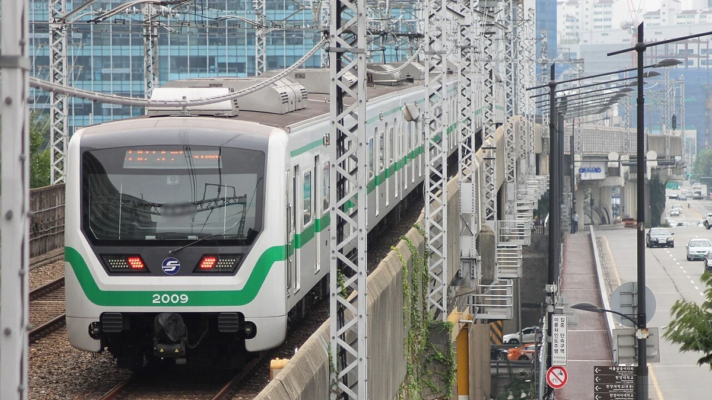
• प्रदूषण मुक्त, तेज और सुरक्षित सार्वजनिक परिवहन प्रणाली जीवन की सुगमता और उत्पादकता बढ़ाती है।
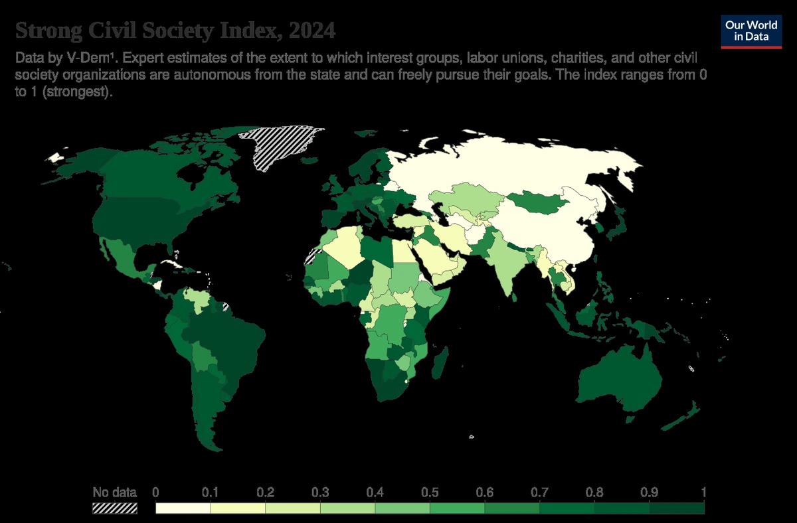
• स्थानीय स्तर पर ग्राम सभा द्वारा शिक्षा, स्वास्थ्य और जल संरक्षण की योजनाओं का सामूहिक क्रियान्वयन।
"विकास ऐसा होना चाहिए जो पर्यावरण को क्षति पहुँचाए बिना वर्तमान पीढ़ी की आवश्यकताओं को पूरा करे तथा भावी पीढ़ियों (Future Generations) की आवश्यकताओं से कोई समझौता न करे।"
— "हमने विश्व को अपने पूर्वजों से विरासत में नहीं पाया है, बल्कि इसे अपने बच्चों से उधार लिया है।"
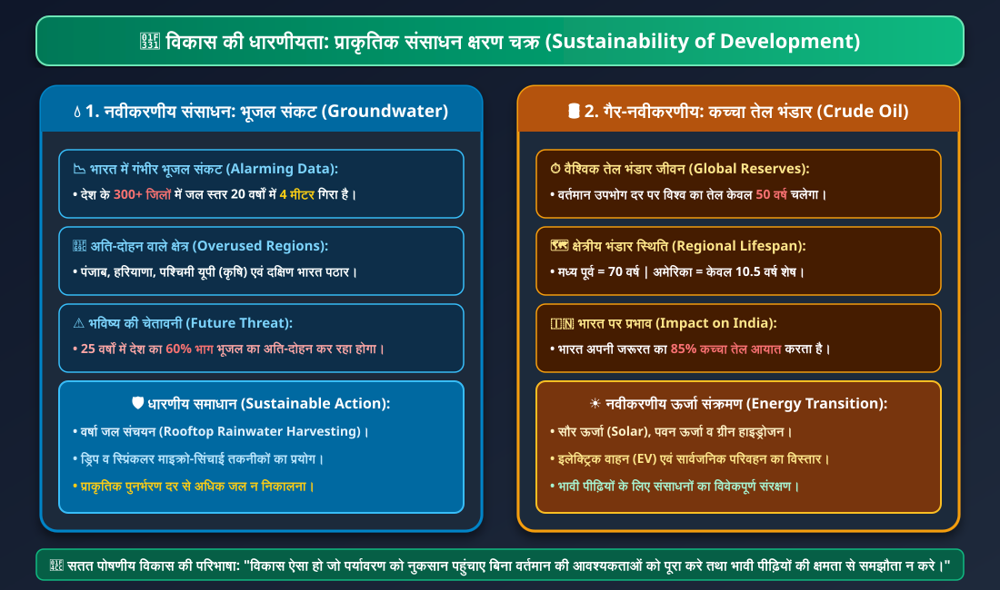
• 1. भूजल संकट (नवीकरणीय संसाधन का अति-दोहन): भारत के 300+ जिलों में जल स्तर 4 मीटर गिरा; अगले 25 वर्षों में 60% भाग अति-दोहन की चपेट में होगा।
• 2. कच्चा तेल संकट (गैर-नवीकरणीय संसाधन का क्षरण): विश्व का तेल भंडार केवल 50 वर्ष चलेगा। भारत 85% आयात पर निर्भर है।
• धारणीय समाधान: सौर/पवन ऊर्जा, वर्षा जल संचयन, माइक्रो-ड्रिप सिंचाई और 3R (Reduce, Reuse, Recycle) नीति।
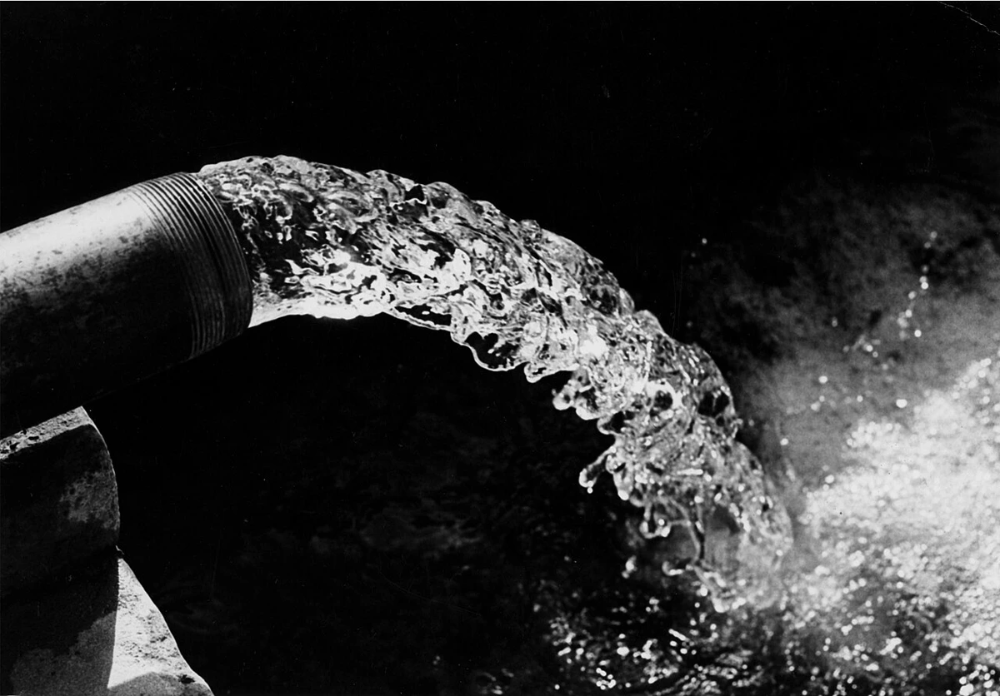
• पंजाब, हरियाणा और पश्चिमी उत्तर प्रदेश में नलकूपों द्वारा प्राकृतिक पुनर्भरण से अधिक जल निकालने से गंभीर जल संकट उत्पन्न हो रहा है।
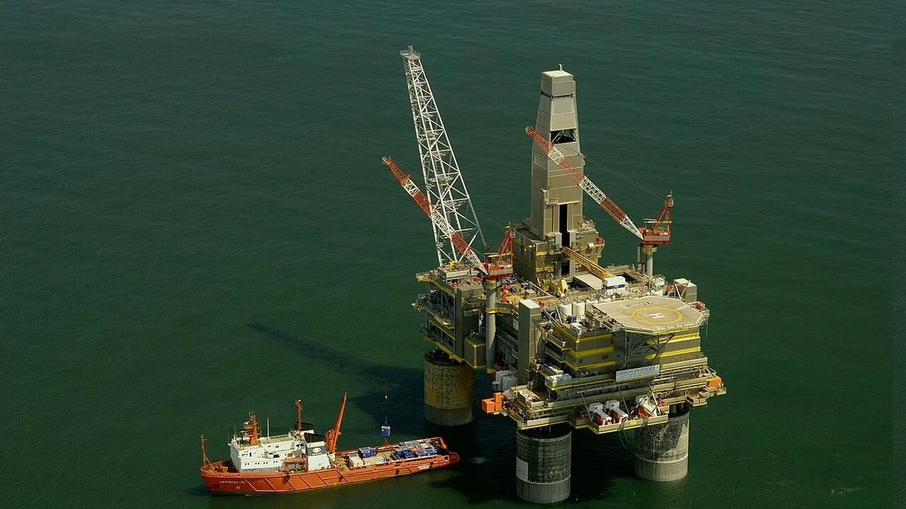
• कच्चा तेल गैर-नवीकरणीय है। वर्तमान उपभोग दर पर इसके वैश्विक भंडार कुछ ही दशकों में समाप्त हो जाएंगे।
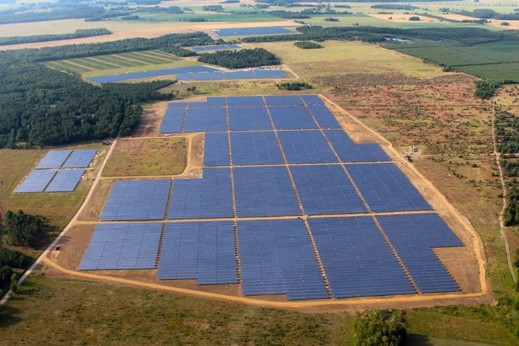
• जीवाश्म ईंधनों की निर्भरता समाप्त कर शून्य-उत्सर्जन सौर और पवन ऊर्जा द्वारा पर्यावरण की रक्षा करना।

• वनों का संरक्षण कार्बन अवशोषण, वर्षा चक्र नियमन और भावी पीढ़ियों के लिए जीवनदायी पर्यावरण सुनिश्चित करता है।
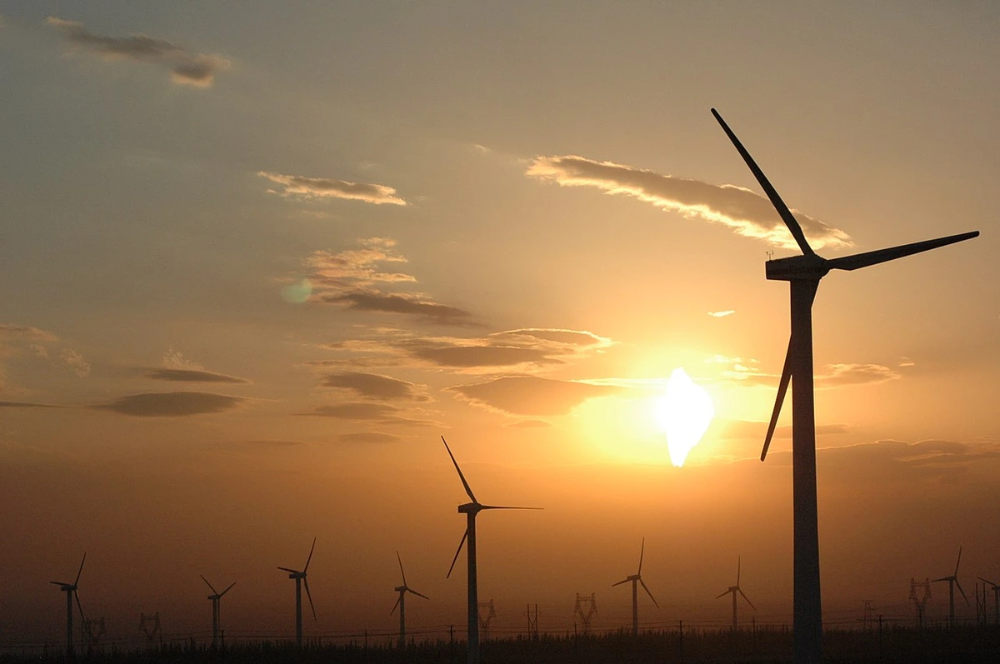
• आर्थिक प्रगति और पारिस्थितिकी संतुलन के बीच सामंजस्य ही वास्तविक और स्थायी विकास का मार्ग है।
1. विकास की दोहरी प्रकृति: अलग-अलग व्यक्तियों के लक्ष्य भिन्न होते हैं; एक का विकास दूसरे का विनाश हो सकता है (उदा. सरदार सरोवर बांध)।
2. मिश्रित लक्ष्य: केवल आय पर्याप्त नहीं; स्वतंत्रता, सुरक्षा, बराबरी व आदर भी अनिवार्य हैं।
3. प्रति व्यक्ति आय: कुल राष्ट्रीय आय ÷ कुल जनसंख्या। विश्व बैंक इसी एकमात्र पैमाने से देशों की तुलना करता है।
4. विश्व बैंक वर्गीकरण: समृद्ध देश (>$12,056) | भारत ($1,820 - निम्न-मध्यम आय) | निम्न आय देश (<$955)।
5. UNDP का HDI: 3 घटक—1. प्रति व्यक्ति आय (PPP $), 2. स्वास्थ्य (जीवन प्रत्याशा), 3. शिक्षा (साक्षरता व स्कूलिंग)।
6. केरल बनाम हरियाणा: हरियाणा आय में आगे, लेकिन केरल स्वास्थ्य (IMR = 10) व शिक्षा (94%) में देश में सर्वश्रेष्ठ (PDS व्यवस्था की सफलता)।
7. BMI सूत्र: [भार (किग्रा) ÷ (ऊंचाई मीटर में)2] (18.5 से कम = अल्पपोषित, 25 से अधिक = अतिभार)।
8. पड़ोसी देश: श्रीलंका (Rank 76) HDI में भारत (Rank 130) से बहुत आगे है।
9. धारणीयता: भूजल का अति-दोहन (300+ जिले प्रभावित) व कच्चे तेल की समाप्ति (50 वर्ष शेष) सतत विकास की मांग करते हैं।